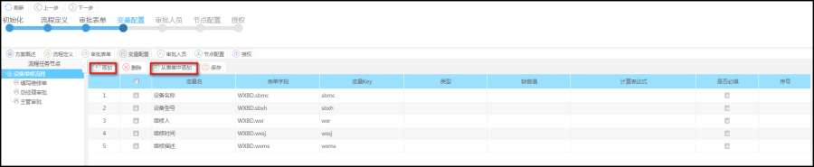
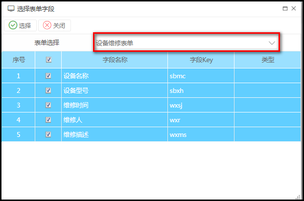

功能描述
变量配置是流程流转过程中需要进行的参数控制，其值来源有：
第三方接口参数传入
表单字段映射
当配置了变量参数时，流程方案在执行过程中即进行参数的转换处理，设置了该参数变量后，其会根据用户在提交表单的数据中进行转换并放置流程的运行过程中，参与流程的各种业务的计算，如可在条件网关中当作运算的条件使用，也可以作为流程任务的外部接口调用的参数，也可以作为人员运行的参数等。
操作步骤
添加表单变量映射，前提是配置了：


【说明】
需要先点左边的流程节点，一般点根节点代表这些变量是流程的全局变量，即在任何的节点上都可以使用该变量
若点击左边的节点，即表示变量的作用域是针对这个节点的。